竹园
观赏竹园建于2008年，面积约30亩。整个专类园分为散生株区、丛生竹区和混生竹区3个区，收集展示国内外特色观赏竹176种，有观杆、观叶、观形及观赏地被竹等类型。配植兰花三七、九头狮子草、地稔、短梗大参等42中花灌木和地被植物，以及再力花等26种水生植物。包括圣音竹、龟甲竹、鼓节竹、花毛竹、黄杆乌哺鸡竹、粉单竹、慈竹、斑竹、紫竹、白纹阴阳竹、花叶矢竹、菲黄竹、翠竹等等。
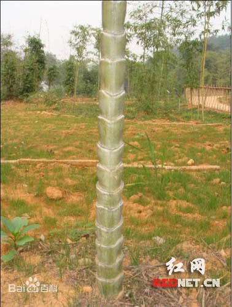
圣音竹
圣音竹属禾本科、竹亚科、刚竹属,是毛竹的变种,其竹竿下端大,向基部逐渐增大呈喇叭状,节间也逐渐缩短,形态别致,是名贵的观赏竹种。
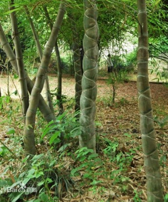
龟甲竹
竿高达20余米，粗者可达20余厘米，幼竿密被细柔毛及厚白粉，箨环有毛，老竿无毛，并由绿色渐变为绿黄色；基部节间甚短而向上则逐节较长；竿环不明显，低于箨环或在细竿中隆起。花枝穗状，基部托以4-6片逐渐稍较大的微小鳞片状苞片；小穗仅有1朵小花；小穗轴延伸于最上方小花的内稃之背部；颖1片，顶端常具锥状缩小叶有如佛焰苞。花丝长4厘米，花药长约12毫米；柱头3，羽毛状。颖果长椭圆形，顶端有宿存的花柱基部。笋期4月，花期5-8月。
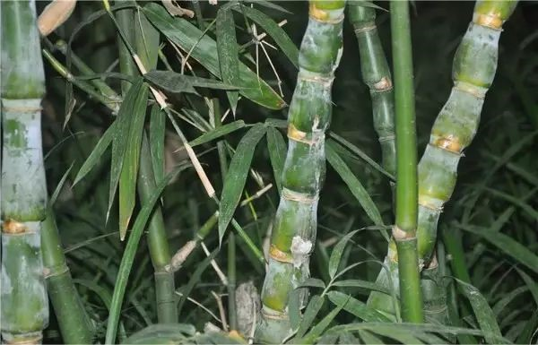
鼓节竹
竹秆高6-8m,径3-5cm,节间长30-40cm,绿色，被白粉，无毛，节平。箨鞘绿色，短于节间，先端呈不对称?的圆拱形；竹秆下部节间缩短而膨大。箨耳不等大，黑褐色，大耳卵形，略为皱褶，小珥椭圆形，边缘遂毛波状；箨舌高2-3mm，先端细齿状；箨叶三角状披针形，直立，基部两侧与箨耳相连。叶片披针形，长10-20cm,宽1.2-1.8cm,笋期限7-9月。
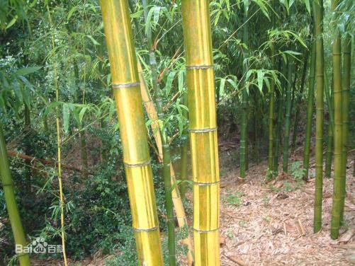
花毛竹
为毛竹变型之一。竿黄色，节间有鲜艳的粗细不一的绿色条纹，非常美观。各地毛竹林内常见有小片分布。遗传性状较稳定。其它各种性状和毛竹相同。花毛竹竿节间有鲜艳粗细不一的黄绿色相间纵条纹，且叶片也具有黄绿色条纹。
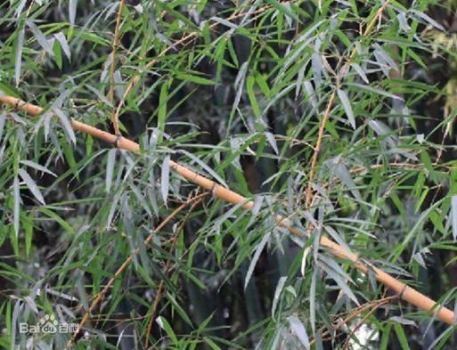
黄杆乌哺鸡竹
禾本科，刚竹属乌哺鸡竹的栽培品质。竿高可达15米，稍部下垂，微呈拱形，竿环隆起，稍高于箨环，竿全部为硫黄色，并在竿的中、下部偶有几个节间具1或数条绿色纵条纹。箨舌弧形隆起，两则明显下延，箨片带状披针形，强烈皱曲，末级小枝具叶；有叶耳及鞘口繸毛；叶舌发达，叶片微下垂，较大，带状披针形或披针形，花枝呈穗状，佛焰苞内有假小穗。小穗常含小花，外稃被极稀疏的柔毛；内稃几无毛，4月中、下旬笋期，4-5月开花。
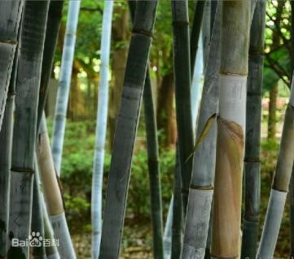
粉单竹
禾本科，簕竹属乔木状竹类植物。竿直立，顶端微弯曲，高可达18米，节间幼时被白色蜡粉，无毛，竿环平坦；箨环稍隆起，捧鞘早落，质薄而硬，箨耳呈窄带形，边缘生淡色繸毛，箨舌先端截平或隆起，箨片淡黄绿色，外翻，卵状披针形，竿的分枝习性高，叶鞘无毛；叶耳及鞘口繸毛发达，叶片质地较厚，披针形乃至线状披针形，花枝极细长，无叶，假小穗含小花，形肿胀，小穗轴节间无毛，外稃宽卵形，内稃与外稃近等长，花药顶端芒状尖头；子房先端被粗硬毛，柱头呈疏稀羽毛状。成熟颖果呈卵形腹面有沟槽。
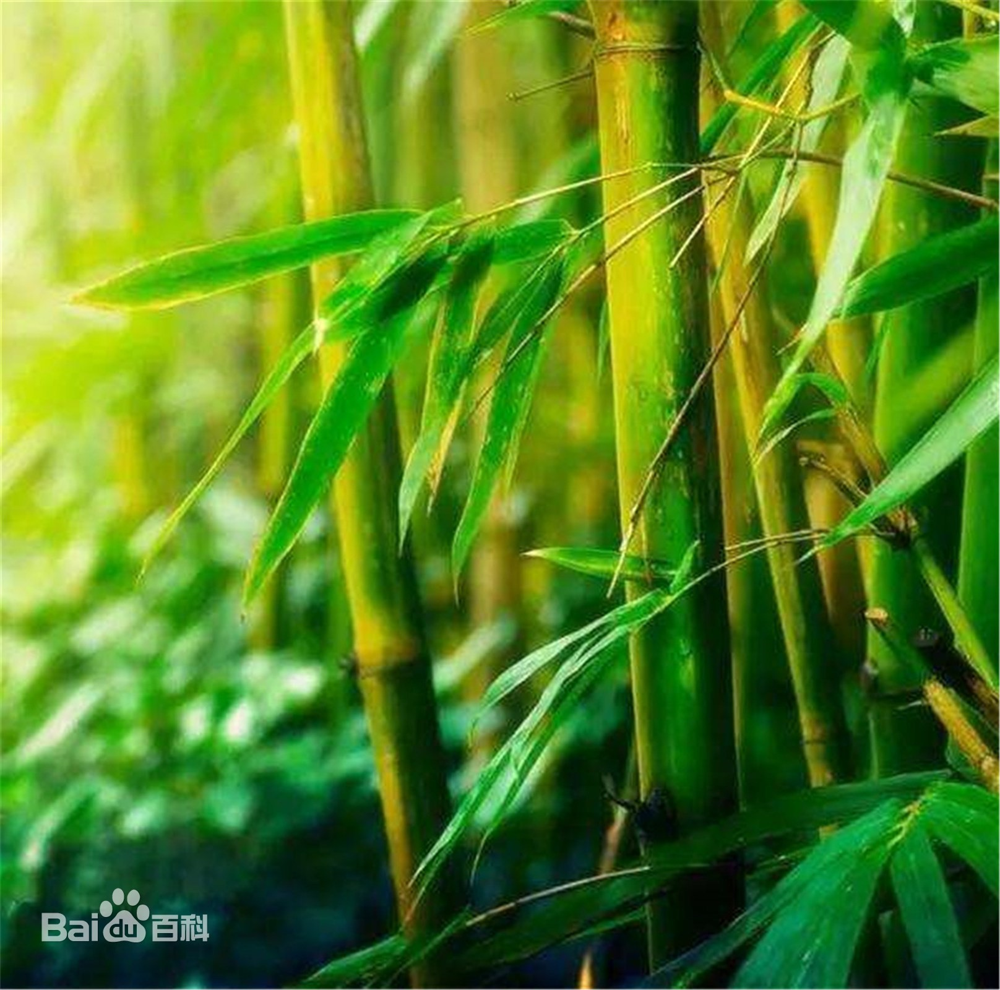
慈竹
禾本科，主干高5-10米，顶端细长，弧形，弯曲下垂如钓丝状，粗3-6厘米。笋期6-9月或自12月至翌年3月，花期多在7-9月，但可持续数月之久。
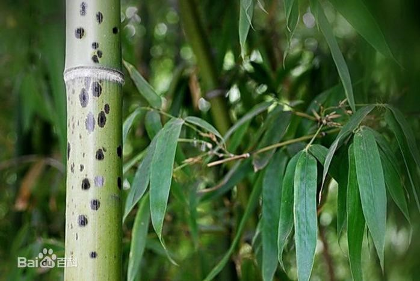
斑竹
禾本科，刚竹属乔木或灌木状竹类植物。竿高可达20米，幼竿无毛，竿环稍高于箨环。竿有紫褐色或淡褐色斑点。箨鞘革质，箨耳紫褐色，繸毛通常生长良好，箨舌拱形，箨片带状，中间绿色，两侧紫色，边缘黄色，叶耳半圆形，叶舌明显伸出，花枝呈穗状，每片佛焰苞腋内有的假小穗，小穗披针形，外稃被稀疏微毛，内稃稍短于其外稃，鳞被菱状长椭圆形，花柱较长，柱头羽毛状。笋期5月下旬。
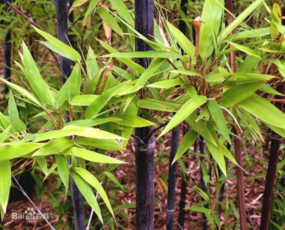
紫竹
竿高4-8米，稀可高达10米，直径可达5厘米，幼竿绿色，密被细柔毛及白粉，箨环有毛，一年生以后的竿逐渐先出现紫斑，最后全部变为紫黑色，无毛；箨片三角形至三角状披针形，绿色，但脉为紫色，舟状，直立或以后稍开展，微皱曲或波状。末级小枝具.2或3叶；叶片质薄。花枝呈短穗状，佛焰苞4-6片，除边缘外无毛或被微毛，叶耳不存在，鞘口繸毛少数条或无，缩小叶细小，通常呈锥状或仅为一小尖头，亦可较大而呈卵状披针形。小穗披针形；柱头，羽毛状。笋期4月下旬。
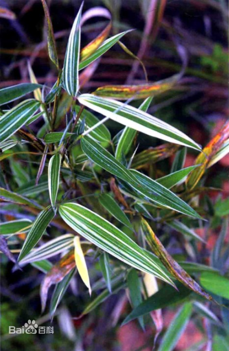
白纹阴阳竹
禾本科、阴阳竹属植物阴阳竹的变型。白纹阴阳竹秆高3-5米，径1-3厘米；节间长达35厘米，深绿色，无毛，节下常被一圈白粉，秆壁厚2-4毫米；箨环稍隆起，无毛；秆环隆起秆每节分枝1，长达60厘米。箨鞘背面具多数脉纹，梭淡黄门包长硬毛或小刺毛，边缘密被纤毛；箨耳及边缘燧毛发达；箨舌高0.5-1毫米；箨片无毛；小枝具叶；叶片长15-25厘米，宽4-5厘米，先端渐尖，拯部阔楔，两面无毛，次脉5-7对，小横脉清晰，组成长方形或方形，边缘小锯齿细密。
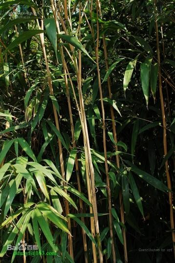
花叶矢竹
花叶矢竹是矢竹的一个栽培变种。原产自日本，是一种优良的珍稀观赏竹种,株高2 m左右,属于矮小型混生竹种。叶片颜色为绿黄色条纹或黄绿色条纹,竹丛美丽,有很高的观赏价值,且有一定的耐寒性。
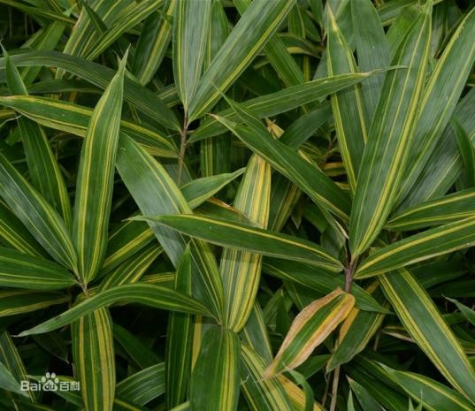
菲黄竹
禾本科、大明竹属植物体木质化，常呈乔木或灌木状竹类植物。秆高可达80厘米，绿色，无毛，平滑，中空：箨环隆起，深紫色，无毛：秆环稍隆起。箨鞘绿色，无毛，箨耳缺失，鞘口初时具微弱缱毛：箨舌截平形，卵状披针形，叶鞘绿色，无毛，边缘具纤毛：叶耳缺失，叶舌近截平形，无毛，叶片披针形，先端渐尖，基本圆形，上面无毛，下面被灰白色柔毛，小横脉组成长方形，笋期4期。
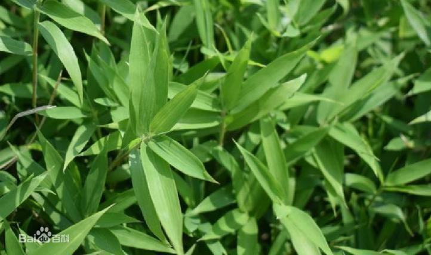